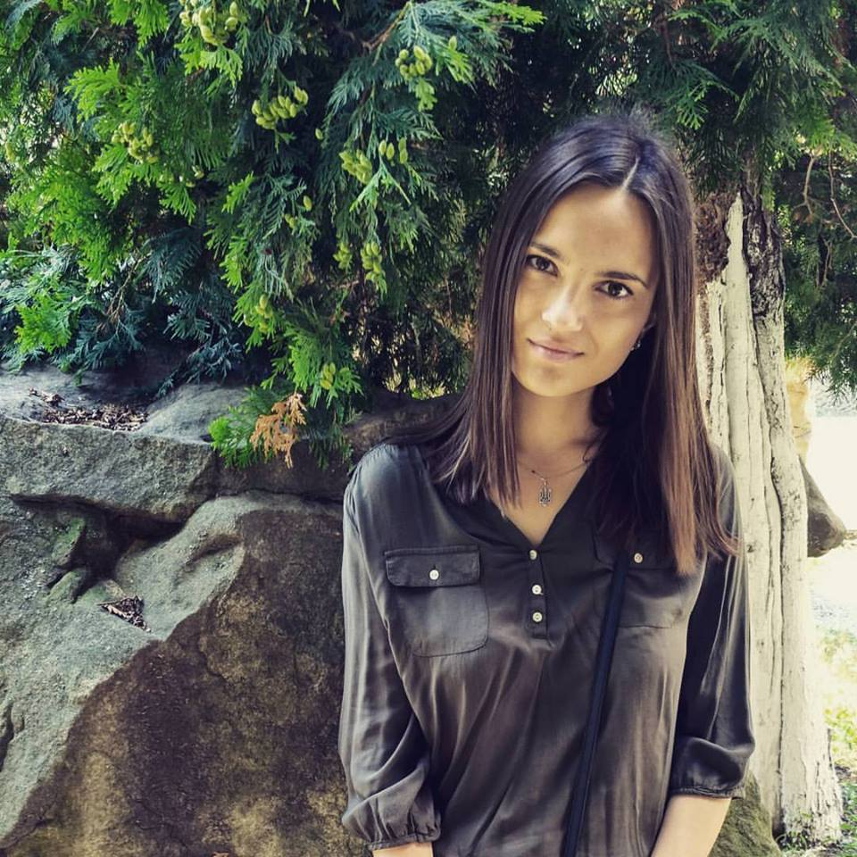
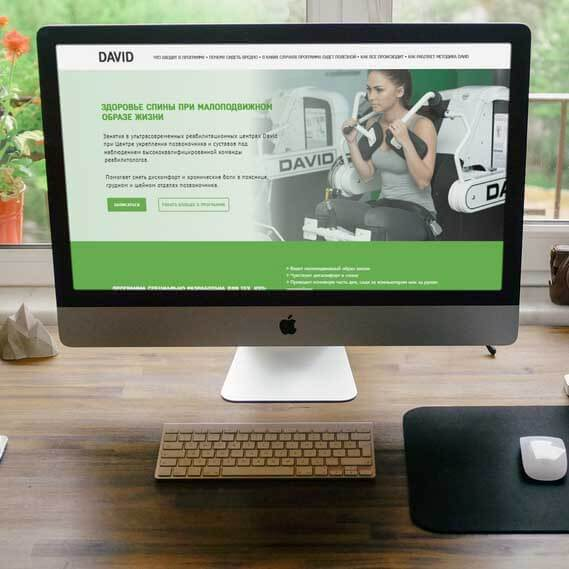
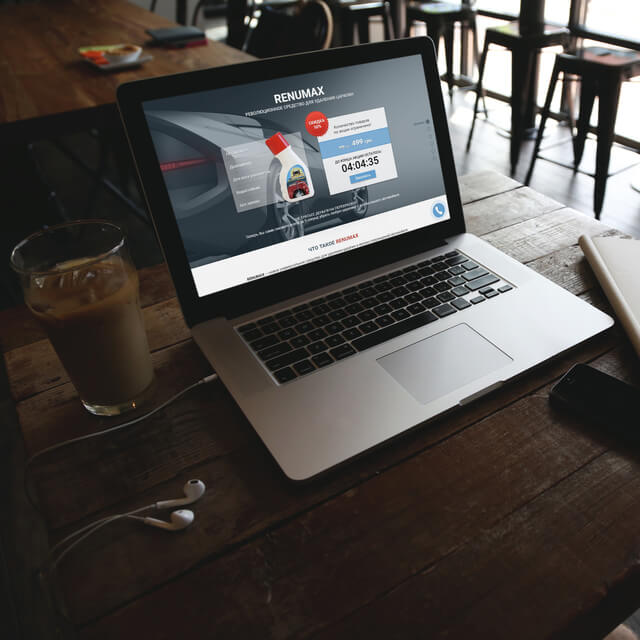
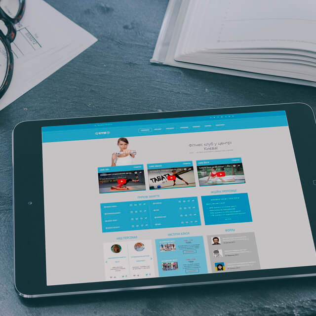
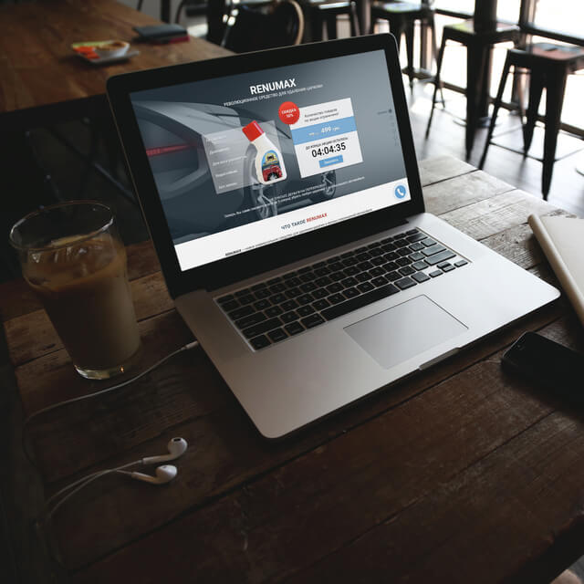
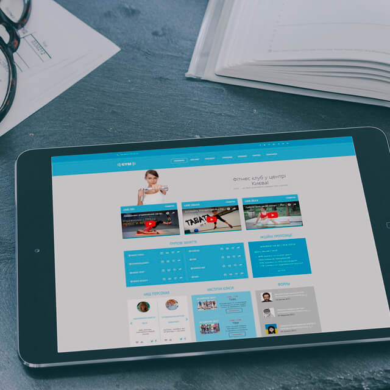

Works
 

David
html5 css3 jquery sass bem mobile first adaptive gulp
Надзвичайна Україна
html5 css3 jquery sass bem mobile first adaptive gulp ajax
ICOkit
html5 css3 jquery sass bem mobile first adaptive gulp
Renumax
html5 css3 jquery sass bem mobile first adaptive gulp
GYM
html5 css3 jquery mobile first adaptive pixel perfect